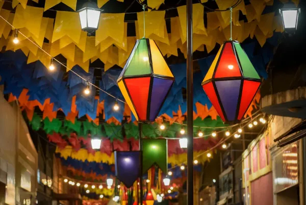

A Festa Junina é uma tradição popular brasileira que ocorre em junho e que foi trazida para o país pelos portugueses. Essa festividade celebra quatro diferentes santos católicos.
A origem da Festa Junina é apontada pelos historiadores como diretamente relacionada a festividades pagãs realizadas na Europa no solstício de verão. Posteriormente, essas festividades foram cristianizadas, e essa festividade passou a fazer parte do calendário festivo do catolicismo. No Brasil, a origem da Festa Junina é ligada aos portugueses e possuía uma conotação estritamente religiosa, realizada em homenagem a santos como São João e Santo Antônio. Atualmente, a Festa Junina possui caráter popular e é comemorada em todas as regiões do Brasil.
Algumas das comidas típicas da Festa Junina são as seguintes:
As brincadeiras juninas são uma das formas de se divertir em uma Festa Junina.
As brincadeiras juninas são uma das formas de se divertir em uma Festa Junina, uma das principais festividades do Brasil. Essas brincadeiras podem envolver pessoas de todas as idades. Algumas das principais brincadeiras populares de Festa Junina são as seguintes: